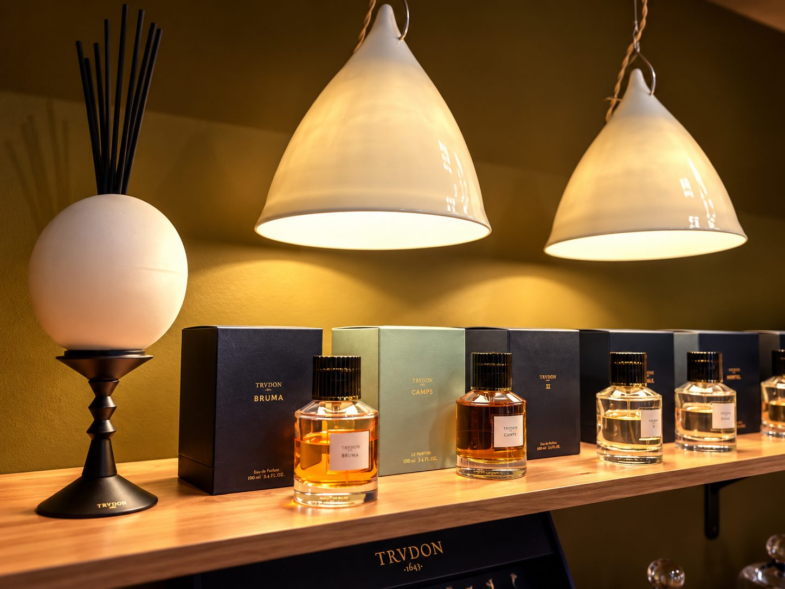

Bienvenue chez Maison Diaphane
Prenez votre temps. Il n’y a ni bonne ni mauvaise réponse, seulement vos souvenirs, vos envies et la façon dont vous sentez les choses.
Ce diagnostic olfactif vous accompagne pendant quelques minutes. Il dessine votre profil : les familles qui vous touchent, celles que vous préférez éviter, et la manière dont vous aimez porter un parfum.
Il ne recommande aucun parfum et aucune marque. Le conseil reste une rencontre : à la fin du diagnostic, Marie-Sophie prend le temps d’en parler avec vous.
Commencer le diagnosticVos informations sont traitées dans les conditions décrites à la fin du diagnostic.
